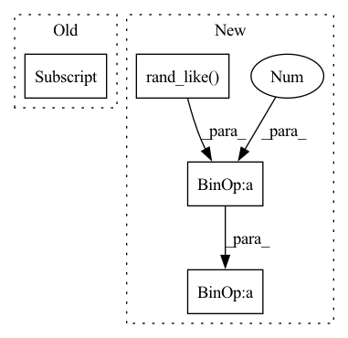

Pattern ID :29184

Before Change
def backward(self, ctx, grad_output):
(input_,) = ctx.saved_tensors
grad_input = grad_output.clone()
input_[input_ > 0] = grad_input / input_
input_[input_ <= 0] = (torch.rand(input_.size()) - 0.5) * self.var
grad = input_.clone()
return grad
After Change
grad_input = grad_output.clone()
grad = (grad_input * out) / (input_ + threshold) + (
grad_input * (~out.bool()).float()
) * ((torch.rand_like(input_) - 0.5) * variance)
// grad += ((torch.rand(input_.size()) - 0.5) * variance) * (~grad.bool()).float()
return grad
In pattern: SUPERPATTERN
Frequency: 3
Non-data size: 4
Instances
Fragment ID: 85897466
Project Name: jeshraghian/snntorch
Commit Name: d39bb2d641f1b85c282e12e1e2ad52c2804858d5
Time: 2021-05-10
Author: 40262130+jeshraghian@users.noreply.github.com
File Name: snntorch/surrogate.py
M Class Name: StochasticSpikeOperator
N Class Name: StochasticSpikeOperator
M Method Name: backward(2)
N Method Name: backward(3)
M Parent Class: torch.autograd.Function
N Parent Class: torch.autograd.Function
M File Name: snntorch/surrogate.py
N File Name: snntorch/surrogate.py
M Start Line: 201
M End Line: 206
N Start Line: 198
N End Line: 204
'>
Before Change
if pad_n != 0:
pts = torch.cat([pts, torch.zeros(pad_n, 3)], dim=0)
density = self.density(pts.to(tmp_grid.device), bound)[:n].reshape(lx, ly, lz).detach()
tmp_grid[xi * 128: xi * 128 + lx, yi * 128: yi * 128 + ly, zi * 128: zi * 128 + lz] = density
// smooth by maxpooling
// TODO: very naive...
After Change
xx, yy, zz = torch.meshgrid(xs, ys, zs, indexing="ij")
pts = torch.cat([xx.reshape(-1, 1), yy.reshape(-1, 1), zz.reshape(-1, 1)], dim=-1) // [N, 3]
// add noise in [-hgs, hgs]
pts += (torch.rand_like(pts) * 2 - 1) * half_grid_size
// manual padding for ffmlp
n = pts.shape[0]
pad_n = 128 - (n % 128)
'>
Fragment ID: 85897465
Project Name: ashawkey/torch-ngp
Commit Name: 7357d93951f0caa2453b257aa8530b2f623e4fe3
Time: 2022-02-28
Author: ashawkey1999@gmail.com
File Name: nerf/renderer.py
M Class Name: NeRFRenderer
N Class Name: NeRFRenderer
M Method Name: update_extra_state(3)
N Method Name: update_extra_state(3)
M Parent Class: nn.Module
N Parent Class: nn.Module
M File Name: nerf/renderer.py
N File Name: nerf/renderer.py
M Start Line: 307
M End Line: 330
N Start Line: 305
N End Line: 323
'>
Before Change
def backward(self, ctx, grad_output):
(input_,) = ctx.saved_tensors
grad_input = grad_output.clone()
input_[input_ > 0] = grad_input
input_[input_ <= 0] = (torch.rand(input_.size()) - 0.5) * self.var
grad = input_.clone()
return grad
After Change
variance = ctx.variance
grad_input = grad_output.clone()
grad = grad_input * out + (grad_input * (~out.bool()).float()) * (
(torch.rand_like(input_) - 0.5) * variance
)
return grad
'>
Fragment ID: 85897456
Project Name: jeshraghian/snntorch
Commit Name: d39bb2d641f1b85c282e12e1e2ad52c2804858d5
Time: 2021-05-10
Author: 40262130+jeshraghian@users.noreply.github.com
File Name: snntorch/surrogate.py
M Class Name: LocalStochasticSpikeOperator
N Class Name: LocalStochasticSpikeOperator
M Method Name: backward(2)
N Method Name: backward(3)
M Parent Class: torch.autograd.Function
N Parent Class: torch.autograd.Function
M File Name: snntorch/surrogate.py
N File Name: snntorch/surrogate.py
M Start Line: 242
M End Line: 247
N Start Line: 239
N End Line: 244